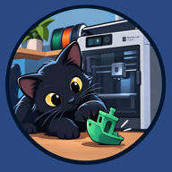

Compagnon iPhone et iPad de Bambuddy · iPhone & iPad companion for Bambuddy
Bala Print se connecte à votre propre serveur Bambuddy (logiciel libre, auto-hébergé) pour suivre et piloter vos imprimantes 3D Bambu Lab.
http://192.168.1.10:8000.Touchez « Essayer la démo » au premier lancement pour découvrir toutes les fonctions avec des imprimantes fictives.
Bala Print est une application indépendante, non affiliée à Bambu Lab ni au projet Bambuddy.
Dernière mise à jour : 30 octobre 2026. Éditeur : Julien Lamadon.
Bala Print ne collecte aucune donnée personnelle. L'app ne contient ni compte utilisateur, ni publicité, ni outil de mesure d'audience, ni service tiers de suivi.
Ces données restent sur votre appareil et sont supprimées avec l'app.
L'app communique uniquement avec les serveurs Bambuddy que vous avez configurés. Aucune donnée n'est envoyée au développeur.
L'app ne collecte aucune donnée, y compris auprès des enfants.
Pour toute question : page de l'app sur l'App Store › « Assistance de l'app ».
Last updated: October 30, 2026. Publisher: Julien Lamadon.
No data collected. Bala Print collects no personal data. There are no user accounts, ads, analytics or third-party tracking.
Stored on your device. The servers you add (name, address, and either an API key or your credentials; with credentials, the password is kept encrypted in the device's iOS Keychain and only used to sign in to your own server again when the session expires), your display preferences, and a summary of printer status shared with the app's widgets and Live Activity. This data stays on your device and is deleted with the app.
Network. The app only talks to the Bambuddy servers you configure. Nothing is sent to the developer.
Support. Bala Print connects to your self-hosted Bambuddy server. Enter the full address with its port (for example http://192.168.1.10:8000), use an API key when authentication is enabled, or try the built-in demo without a server. Contact the developer from the app's App Store page › "App Support".